GILE DOCUMENTATION
The Moon
Explore the various overall Moon environment.
The Moon (General Environment)
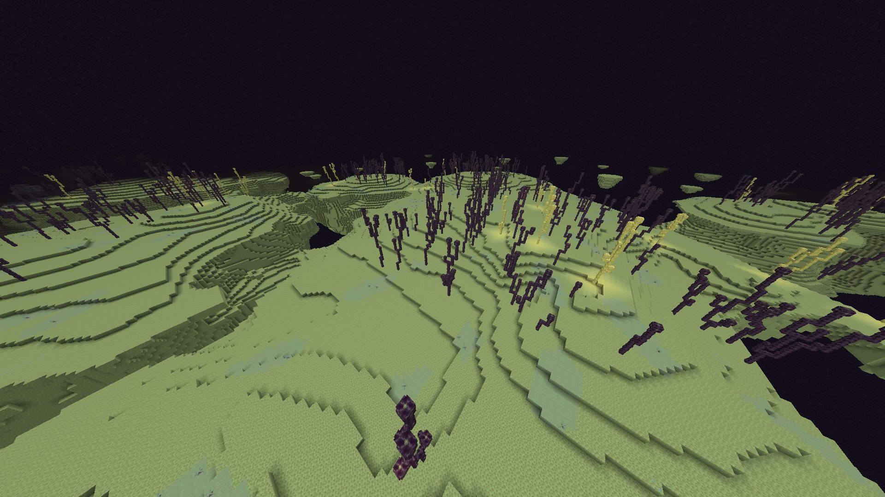
In GILE, the Outer End Islands represent The Moon. (The Main End Island remains strict vanilla). Here, you will find Primogem Ore, moon sand blobs, glowing flora, and the most powerful material in the mod: Enderite.
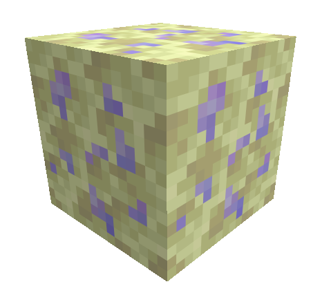
Enderite is the ultimate late-game tier, acting as a direct upgrade to Netherite. You can craft full Enderite tool, weapon, and armor sets. Needs Netherite Tool Tier to be mined.
Allows player to progress its gear to the Enderite tier. The only really needed things from the Nether to progress with GILE - Nether Upgrade Smithing Template & Ancient Debris for Netherite.
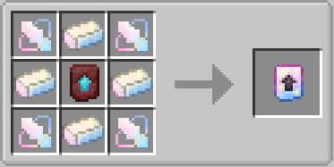
| Item | Recipe / Use |
|---|---|
| Fate Upgrade Smithing Template | Used at a Smithing Table to upgrade Netherite gear to Enderite gear. |
| Enderite Shard | Drops 1-2 from every Enderite Ore block. It is used as Nuclear Cannon ammo & in the recipe of the ingot. |
| Enderite Ingot | The strongest tier ingot in the game, crafted with 4 Enderite Shards & 4 Crystals. |
| Enderite Block | The most valuable block of the game, harder then Netherite analog. |
| Ore Generation | Generates everywhere on the Moon (the Outer End), as rarely as Primogem Ore, but in veins 4 times smaller - from 1 to 3 ore blocks per vein. |
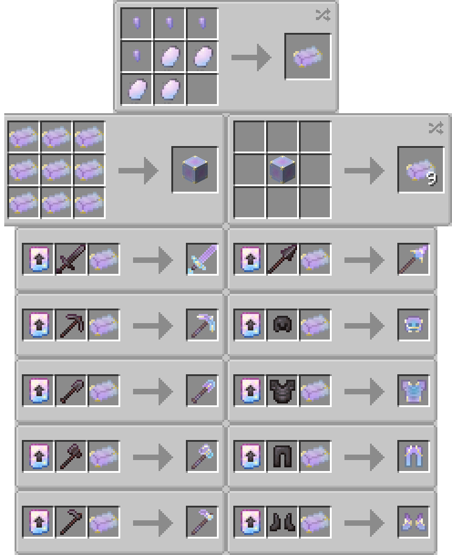
Across all Outer End Islands (The Moon), independent mobs can spawn alongside standard generation. Some of these lunar creatures have also adapted to spawn in specific Overworld biomes.
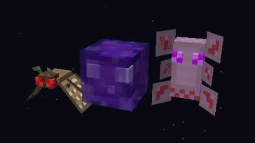
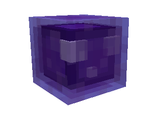
Void Slime
Ground · Hostile · The End 10 HP
10 HP
Spawns in small groups only on The Moon as well as in the Ghostly Thickets biome.
Jumps around everywhere with no goal. Sometimes jump into The Void to reunite with it.
On targeting player jump slowly towards it. Can follow in the range of 24 blocks. On hit makes a pretty strong knockback to the player.
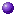
0-4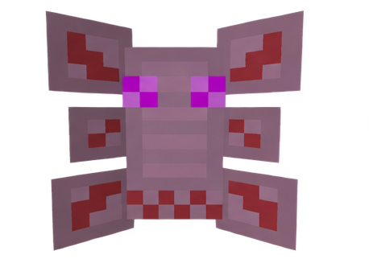
Ender Fly
Ghost · Hostile · The End
15 HP
Spawns in tiny groups only on The Moon as well as in the Dark Forest and Mushroom Fields biomes.
Flies on place looking for a player to attack. Don't move protecting its territory.
On targeting player shoots 4 consecutive stings, each deals 1 Heart (2 HP) of damage. Chases the player when spotted. Stings disappear on touching the ground.
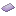
2-4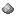
1-3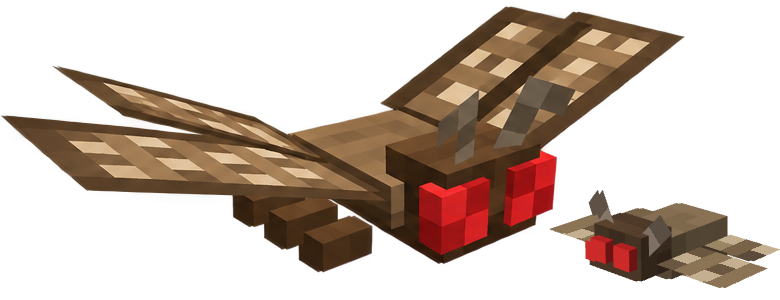
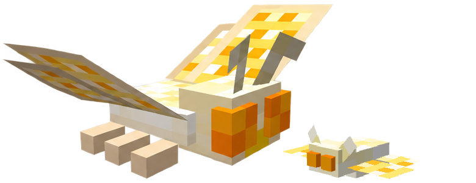
Moth
Flying · Peaceful · Overworld / The End
6 HP
Spawns in tiny groups only on The Moon as well as in the Dark Forest and Mushroom Fields biomes.
Idles everywhere with no goal. Flies everywhere between moon flowers and chorus plants.
Can be bred using moon flowers. If named "Radiance", changes scale and texture.
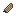
2-4P.S. Moth can also spawn in the Overworld - in Dark Forest and Mushroom Fields biomes. That means you can use its drops even before getting to the Moon.
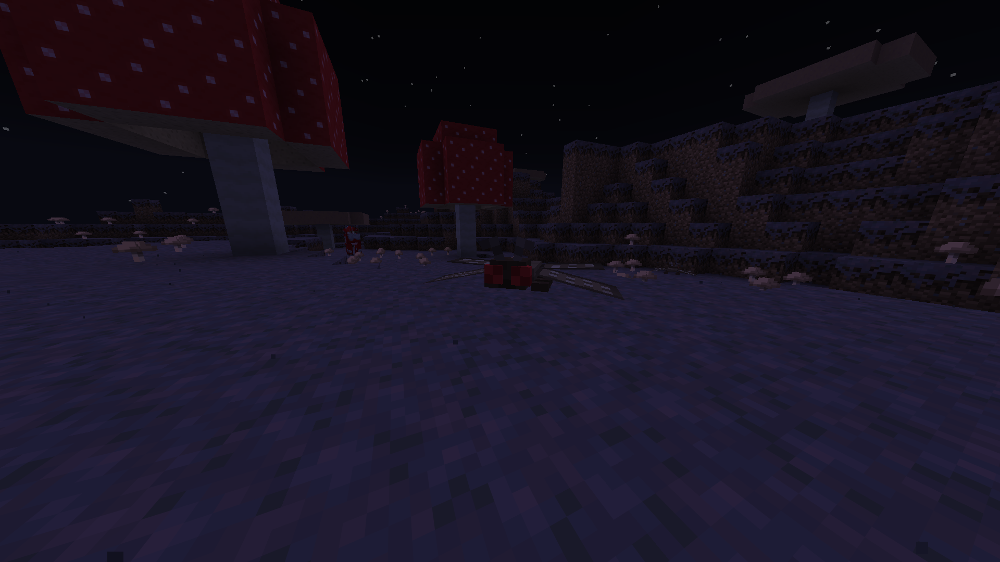
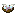
Void Slimeballs, Glowing Chorus & Moon Flower found here can be used to craft a powerfull food item. Restores ??? HUNGERIMAGE and gives levitation on consumption.
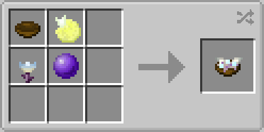
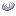
Phasma can be eaten raw, restoring ??? HUNGERIMAGE. If ghost is killed while set on fire, it drops cooked phasma. Can be cooked also on any campfire, in the furnace and in the smoker. The cooked variant restores ??? HUNGERIMAGE Basically phasma is the End "meat".
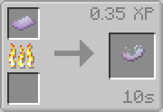